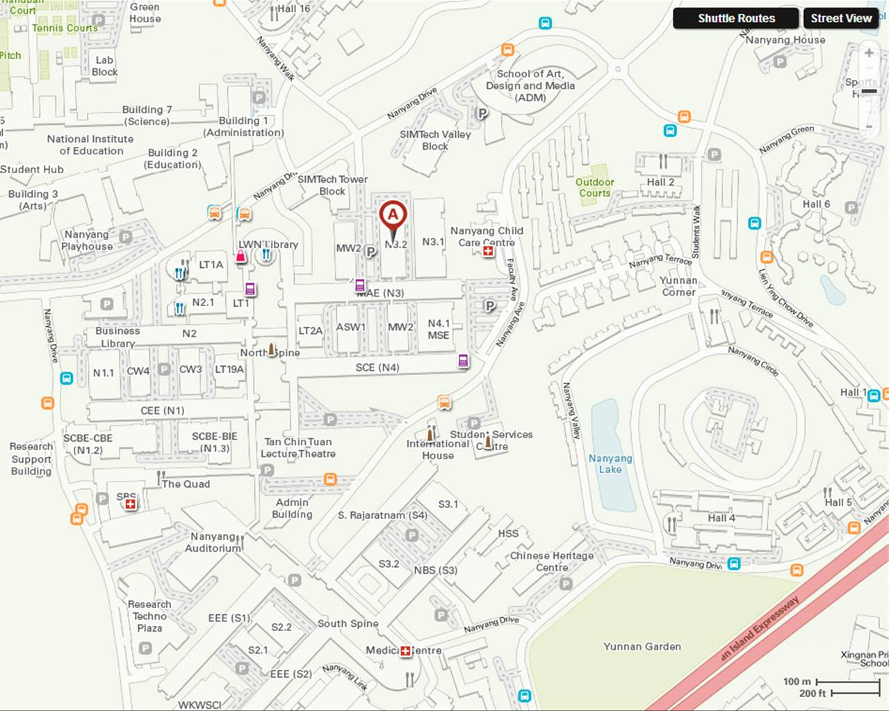

Focus
Designing resilient manufacturing systems
Research connects product architecture, process modeling, additive manufacturing, and production intelligence to support next-generation mobility, healthcare, aerospace, and factory systems.
Nanyang Technological University
The lab applies sciences, economic theory, and AI to the design of customized and sustainable products, services, systems, strategic design optimization, advanced modeling and simulation, additive manufacturing, embedded sensors, digital twins, and smart factories.
Focus
Research connects product architecture, process modeling, additive manufacturing, and production intelligence to support next-generation mobility, healthcare, aerospace, and factory systems.
Research
Modular product, service, and system design for personalization, recovery, and long-term sustainability.
Design methods that account for user diversity, accessibility, and human-centered performance.
Multidisciplinary design optimization and decision models for complex engineering systems.
Design for 3D printing, process optimization, smart materials, and lightweight structures.
Customized 3D printed sensors for predictive maintenance and Industry 4.0 applications.
Production digital twins, software-defined products, reconfigurable cells, and intelligent scheduling.
Members
Principal Investigator
School of Mechanical and Aerospace Engineering, Nanyang Technological University
SKMOON@ntu.edu.sg · (+65) 6790 5599
Jeon Sang Jun
Chua Zhong Yang, Tan Yu En, Katherine Gao, Nicholas Ng, Lee Jong Suk, Cho Seung Yon, Khan Muhammad Tayyab, Kim Jung Yeon, Seo Su Yeon
Kim Dong Hui, Winston Lim Wei Liang, Wu Qiong Wendy, Jeon Yee Kyung
Jenny Yi Nagyoung
Baek Jung Woo, Ahn Il Hyuk, Jiao Lishi, Li Yu Hua, Wang Bing, Choi Joon Phil, Park Seong Je, Jamie Ng Suat Ling, Lei Ningrong, Kim Samyeon, Yao Xiling, Jayaraman Yogeshwaran, Wu Fang, Truong Ngoc Quoc Thang, Ko Hyunwoong, Passaporn Kanchanasri, Sacco Enea, Zhang Haining, Zhang Yongjie, Chua Ping Chong, Jerin Wesley R, Lim Che Han, Liu Bufan, Lee Guo Sheng, Chen Lequn.
Publications
Jeon, S., Park, S.J., Moon, S.K., and Yang, D., “Enhanced Mechanical Properties and Reduced Anisotropy of Material Extrusion-Manufactured Short Carbon Fiber-Reinforced Plastic via Cold Isostatic Pressing,” Virtual and Physical Prototyping, Vol. 20, No. 1, e2499934.
Kim, J., Lee, J., Park, S.J., Lee, J., Song, B., and Moon, S.K., “Software-Defined Factory: Paradigm Shift in Manufacturing Towards Industry 5.0,” International Journal of Precision Engineering and Manufacturing - Smart Technology, Vol. 3, No. 2.
Khan, M.T., Chen, L., Ng, Y.H., Feng, W., Tan, N.Y.J., and Moon, S.K., “Leveraging Vision-Language Models for Manufacturing Feature Recognition in CAD Designs,” ASME Journal of Computing and Information Science in Engineering, Vol. 25, No. 10.
Chen, L., Bi, G., Yao, X., Su, J., Tan, C., Feng, W., Benakis, M., Chew, Y., and Moon, S.K., “In-situ process monitoring and adaptive quality enhancement in laser additive manufacturing: a critical review,” Journal of Manufacturing Systems.
Chen, L., Yao, X., Tan, C., Su, J., Ng, N.P.H., Chew, Y., Liu, K., and Moon, S.K., “Multisensor fusion-based digital twin for localized quality prediction in robotic laser-directed energy deposition,” Robotics and Computer-Integrated Manufacturing.
The full archived publication list is preserved in the original publication page.
Contact
School of Mechanical and Aerospace Engineering, Nanyang Technological University
Design Laboratory (MAE), Block N3.2, N3.2-B1-02